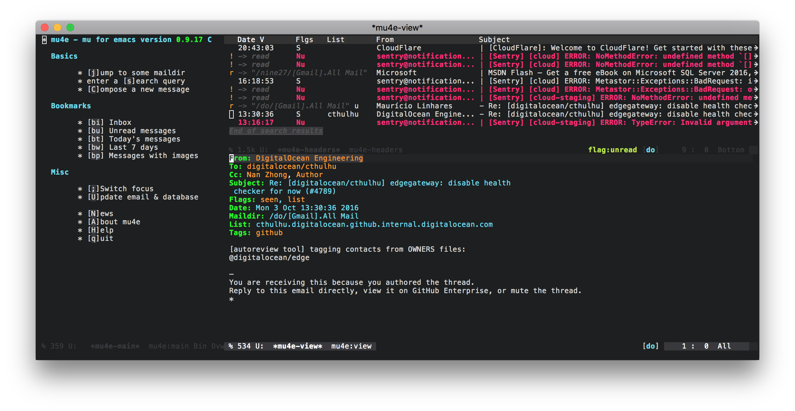

Better Email with mu4e
I've never been a big fan of email, but at this point, it's so ingrained into the day to day of every profession that the only thing one can do is conform. I used gmail ever since it was introduced by Google in 2004, and I have to admit that out of all the free email providers, it's pretty great. Sure its UI has had its ups and downs, and it has been the centre of some controversy with the scanning of emails for advertisements, but the feature set it provides is hard to argue against, but it also has its shortcomings.
When the amount of email you receive starts to encroach on unmanageable territory, you start realizing that:
- the UI becomes very cumbersome
- bulk actions takes a lot of mouse movement
- as fast as it is, seeing that "Loading…" message at the top of the screen is just ugh
- and most importantly…
Checking email in a browser is a huge distraction. I spend most of my day staring at emacs, and when email notifications ding, I feel compelled to check; switching to the completely browser pulls me out of my flow. Once you're in the browser, you realize that you are on a slippery slope… It starts tempting you to check hacker news or reddit (at least for me), and often times it's impossible to not succumb to it; we all know how easily time goes missing "just checking if anything new popped up on the front-page".
mu4e
Addressing these annoyances is where mu4e comes into play. mu4e is an email frontend for emacs that built on top of mu, which is an email indexer/searcher. My reasons for why mu4e has greatly improved my email experience are:
- super fast and optimized UI
- keyboard driven actions
- bulk selection/actions can leverage all of emacs' search/marking functionality
- emacs text editing for writing email
- fast search supporting complex querying
- extensible because emacs :fireworks:
- keeps me in my workflow since I'm already in emacs
- no distractions
Note: there are a number of other text based email clients which are similar to mu4e (another client I've tried for a couple months was mutt), but I feel like mu4e is much better overall; it so much more customizable and fits really nicely with gmail's IMAP implementation (more on this later).
Getting mu4e up and running is not a difficult task, but it's definitely more work than you are probably used to, if you haven't tried other text based email clients before. The following describes my configuration and setup that hopefully you makes it a little easier for you to jump in.
My email setup consists of 2 gmail accounts, one personal and one for work, both of which are on Google Apps and secured via two-factor auth. The steps below are also tailored to macOS. If your setup is different, much of the following should still be relevant with a few tweaks.
Syncing Email
mu4e/mu works off of a maildir, so the first step is to actually get your email accounts setup to sync with your local maildir. It feels a little weird to be storing copies of your email locally in this day and age, but one often overlooked advantage to this is that you always have full access to your historical email (eg. when you don't have internet access). I also use my phone to check my email, so being able to sync email state between devices is a must; this rules out using POP and leaves me with IMAP. There are a number of applications that can be used for this: offlineimap, mbsync, and others. I personally use offlineimap because it seems to offer the most documentation and exaples, and it seems to be the only one that supports XOAUTH2 which is the preferred way to access gmail accounts.
gmail - Special Snowflake
Before going into the configuration, you should be aware that the way gmail does IMAP is non-standard. In regular IMAP, each email can only exist once across all folders; gmail has labels instead of folders, and each email can be assigned multiple labels, so this uniqueness constraint clearly doesn't work. Instead, gmail has a notion of an "All Mail" folder, which includes a copy of every single one of your emails (this includes your received, sent, drafts, trashed, etc.; the only exception is your spam which does not appear here). Your inbox and all your labels get translated into "folders" and as a result you are going to have multiple copies of the same email. This wrecks havoc on regular IMAP clients, and as a result, special considerations need to be taken into account.
mu4e, has a special configuration option to hide duplicate copies of emails, but when actions are taken on an email (eg. archiving, trashing), only that copy gets affected, and as a result you run into weird consistency issues (this inconsistency persists until you perform two syncs; the first sync informs gmail of the changes so that it can resolve the inconsistency, and the second sync pulls the resolved state down). I've ended up settling on an approach detailed by Magnus Therning, where I completely ignore the label "folders" and rely almost completely on the "All Mail" folder. This works extremely well because mu is essentially just an email indexer and searcher, and since all the gmail labels are also included as part of a header (as tags) in the email messages themselves, it's possible to reconstruct them by building custom search queries for viewing email as well as adding and removing these tags to "change" the labels for email. This cleverly solves the issue of duplicated emails and also cuts down the amount of email that needs to be synced.
The following assumes this approach.
offlineimap
First, install offlineimap
brew install offlineimap
The next step is to configure offlineimap. offlineimap also supports loading a python environment file so that configuration can be evaluated using python; any imports and any other things such as custom function definitions should all live in that environment file. I take advantage of this feature to pull my oauth credentials from the macOS keychain so that they don't need to be stored in plaintext in the config file. My python environment file lives at ~/.offlineimap.py and contains:
import json import subprocess def secure_string_for(account, service, value): # this relies on the macOS `security` tool # https://developer.apple.com/legacy/library/documentation/Darwin/Reference/ManPages/man1/security.1.html return json.loads(subprocess.check_output(["security", "find-generic-password", "-a", account, "-s", service, "-w"]).strip())[value]
offlineimap looks for your configuration at ~/.offlineimaprc; my configuration is as follows and includes annotated comments (for complete documentation of the configuration options see the example config:
[general]
# This lists the accounts that I will be configuring.
accounts = nine27, do
# offlineimap by default will fsync() to try and reduce chances for data
# inconsistency. In most cases disabling this is fine, and also reduces
# the number write cycles.
fsync = false
# This is the path to the aforementioned python environment that will be used.
pythonfile = ~/.offlineimap.py
# This helps prevent offlineimap hanging when network connection is lost.
socktimeout = 60
# This is the account definition for my first account,
# note the name matching that in the accounts list in [general].
[Account nine27]
# These repository names can be anything as they are only used to link the
# local and remote repository config to the account.
localrepository = nine27-local
remoterepository = nine27-remote
# Use sqlite instead of a flat file for better performance.
status_backend = sqlite
# This enables syncing the labels on the emails: \Inbox, \Flagged, \Trashed, etc.
synclabels = yes
# This is the header name that the labels are stored at, gmail uses X-Keywords.
labelsheader = X-Keywords
# Here you can configure a custom script to be run each time a sync completes.
postsynchook = ~/.offlineimap/hooks/postsync-nine27
# This is the local repository config (local meaning the local maildir).
[Repository nine27-local]
# Since this is a gmail account (special quirks), the type is GmailMaildir;
# regular IMAP accounts should use Maildir.
type = GmailMaildir
# This is the path to the maildir.
localfolders = ~/.mail/nine27
# This is the remote repository config (imap server)
[Repository nine27-remote]
# Since this is a gmail account, the type is Gmail; regular imap accounts should
# use IMAP.
type = Gmail
# gmail no longer supports regular LOGIN for auth, you either need to use OAuth, setup
# access for insecure apps (https://support.google.com/accounts/answer/6010255?hl=en),
# or generate an app password (https://support.google.com/accounts/answer/185833).
# Accounts that use two-factor auth will need to use OAuth or an app password.
# The following example is for OAuth, for instructions on setting this up see
# https://github.com/OfflineIMAP/offlineimap/blob/master/offlineimap.conf#L809-L865.
# When using an insecure login or an app password, this should be LOGIN.
auth_mechanisms = XOAUTH2
remoteuser = nan@nine27.com
# The following are the config options for OAuth login, note the secure_string_for
# python method that I've defined in ~/.offlineimap.py to securely fetch credentials from
# the macOS keychain.
oauth2_client_id_eval = secure_string_for("nan@nine27.com", "mail.nine27.com", "client_id")
oauth2_client_secret_eval = secure_string_for("nan@nine27.com", "mail.nine27.com", "client_secret")
oauth2_refresh_token_eval = secure_string_for("nan@nine27.com", "mail.nine27.com", "refresh_token")
# Location of the ssl ca certificate.
sslcacertfile = /usr/local/etc/openssl/cert.pem
# Normally deleting an email would actually delete it, however gmail works differently
# in that deleting an email just adds a /Trashed label to it. So if you want to use the Trash
# functionality of gmail, this should be set to no.
realdelete = no
# This is evaluated python that determines which folders to sync. The key here is to ignore
# the label "folders" and rely on only the All Mail folder and the other folders that map onto
# mu4e's flag actions.
folderfilter = lambda folder: folder.startswith('[Gmail]/') and \
folder[8:] in ['All Mail', 'Trash', 'Drafts', 'Spam']
trashfolder = [Gmail]/Trash
# The following is essentially the identical configuration, but for my work email.
[Account do]
localrepository = do-local
remoterepository = do-remote
status_backend = sqlite
synclabels = yes
labelsheader = X-Keywords
postsynchook = ~/.offlineimap/hooks/postsync-do
[Repository do-local]
type = GmailMaildir
localfolders = ~/.mail/do
[Repository do-remote]
type = Gmail
auth_mechanisms = XOAUTH2
remoteuser = nzhong@digitalocean.com
oauth2_client_id_eval = secure_string_for("nzhong@digitalocean.com", "mail.digitalocean.com", "client_id")
oauth2_client_secret_eval = secure_string_for("nzhong@digitalocean.com", "mail.digitalocean.com", "client_secret")
oauth2_refresh_token_eval = secure_string_for("nzhong@digitalocean.com", "mail.digitalocean.com", "refresh_token")
ssl=true
sslcacertfile = /usr/local/etc/openssl/cert.pem
realdelete = no
folderfilter = lambda folder: folder.startswith('[Gmail]/') and \
folder[8:] in ['All Mail', 'Trash', 'Drafts', 'Spam']
trashfolder = [Gmail]/Trash
Once your configuration is in place, running
offlineimap -o
will kick off a sync and pull down all your email. This might take a while depending on how much email you have.
For those of you not familiar with syncing mail between a local maildir and a remote server, you should be aware that when you take any actions on your email (mark as read, archiving, trashing, etc.), the changes will not be propagated to the remote server until your next sync. This means that you need to run your sync periodically to keep your mail up to date. There are a number of approaches to doing this, but the most common approaches are:
- run offlineimap without the
-oflag and configuring it to sync periodically via theautorefreshconfig option - use something else like
launchdorcronto periodically sync
I don't recommend using autorefresh mostly because offlineimap has a tendency to randomly hang; it happens especially often when you lose/regain internet connectivity (which happens all the time if you are on a laptop). This is pretty annoying because you are left thinking you have no new mail, when instead it's offlineimap not behaving. Running it periodically and specifying a socktimeout value more or less relieved this issue for me.
Some other useful command line flags for offlineimap are:
offlineimap -a <account name>
to sync a specific account, and
offlineimap -q
to do a quick sync (skip syncing the flags on emails).
In my configuration I've set up postsync hooks for my accounts so that I can be notified of any new email that has been synced. For example, the postsync script for my personal account looks like:
#!/bin/sh # Count new mail for every maildir maildirnew="$HOME/.mail/nine27/*/new" new="$(find $maildirnew -type f | grep -v Gmail | wc -l | sed 's/ //g')" # Notify me via a notification if [ $new -gt 0 ] then /usr/local/bin/reattach-to-user-namespace /usr/local/bin/terminal-notifier -title 'offlineimap' -subtitle 'nan@nine27.com' -message "You have $new new email(s)!" -group offlineimap-nine27 fi
Sending Email
Now that you are able to receive email, we can move on to configuring the sending of email. There are many tools for this similar to syncing, but the one I use and have seen the most configuration examples for is msmtp.
You can install it with:
brew install msmtp
msmtp looks for its configuration at ~/.msmtprc, and it is pretty straightforward to configure. My configuration with annotated comments where things are not self-explanatory is as follows:
account nine27 host smtp.gmail.com port 587 protocol smtp auth on from nan@nine27.com user nan@nine27.com # msmtp does not support OAuth, so instead you will have to use user/pass. If you don't have # two factor auth enabled, enabling insecure apps to access your email should be sufficient and # you can use your normal password, but if you do have it enabled you will need to generate an # app password. See the comments in the offlineimap config for details. # Once again I'm using `security` to pull the password from my macOS keychain. passwordeval security find-internet-password -g -a nan@nine27.com -s smtp.gmail.com -w tls on tls_starttls on # If you don't have this cert, you can generate it by ~brew install curl~ and then running # `/usr/local/Cellar/curl/<curl version>/libexec/mk-ca-bundle.pl` tls_trust_file ~/.msmtp/ca-bundle.crt account do host smtp.gmail.com port 587 protocol smtp auth on from nzhong@digitalocean.com user nzhong@digitalocean.com passwordeval security find-internet-password -g -a nzhong@digitalocean.com -s smtp.gmail.com -w tls on tls_trust_file ~/.msmtp/ca-bundle.crt account default : nine27
And that's it! A nice thing about accessing your mail via a local maildir and sending mail using a SMTP client, is that you can write mail and queue it up to be sent when you don't have an internet connection, and once you are connected the client will send it out.
Putting it All Together with mu4e
Now that both receiving and sending email has been configured, we can put it all together using mu/mu4e. You can install it with:
brew install mu --with-emacs --HEAD
Note: The reason for building mu from HEAD is because the 'mu4e-mark-execute-pre-hook was not available in the latest release at the time of writing. This may no longer be the case.
The first thing you will want to do is index your email
mu index -m ~/.mail
mu is pretty fast at doing this, but this might still take some time depending on how much email you have.
Now all that is left is to configure your emacs. A quick disclaimer, much of this config uses pieces that have been written by others, and I definitely don't claim to be using mu4e anywhere close to its full potential. My configuration only scratches the surface of the possible customizability (it's pretty incredible that even at this state the user experience is so great), but the following is my configuration with annotations where things are not self-explanatory:
;;; mu.el --- mu email config (use-package mu4e :config ;; This is a helper to help determine which account context I am in based ;; on the folder in my maildir the email (eg. ~/.mail/nine27) is located in. (defun mu4e-message-maildir-matches (msg rx) (when rx (if (listp rx) ;; If rx is a list, try each one for a match (or (mu4e-message-maildir-matches msg (car rx)) (mu4e-message-maildir-matches msg (cdr rx))) ;; Not a list, check rx (string-match rx (mu4e-message-field msg :maildir))))) ;; Choose account label to feed msmtp -a option based on From header ;; in Message buffer; This function must be added to ;; message-send-mail-hook for on-the-fly change of From address before ;; sending message since message-send-mail-hook is processed right ;; before sending message. (defun choose-msmtp-account () (if (message-mail-p) (save-excursion (let* ((from (save-restriction (message-narrow-to-headers) (message-fetch-field "from"))) (account (cond ((string-match "nzhong@digitalocean.com" from) "do") ((string-match "nan@nine27.com" from) "nine27")))) (setq message-sendmail-extra-arguments (list '"-a" account)))))) (setq mail-user-agent 'mu4e-user-agent) (setq mu4e-mu-binary "/usr/local/bin/mu") (setq mu4e-maildir "~/.mail") (setq mu4e-get-mail-command "offlineimap -o") (setq mu4e-update-interval 300) (setq mu4e-view-show-images t) (setq mu4e-html2text-command "w3m -dump -T text/html") ;; This enables unicode chars to be used for things like flags in the message index screens. ;; I've disabled it because the font I am using doesn't support this very well. With this ;; disabled, regular ascii characters are used instead. ;(setq mu4e-use-fancy-chars t) ;; This enabled the thread like viewing of email similar to gmail's UI. (setq mu4e-headers-include-related t) (setq mu4e-attachment-dir "~/Downloads") ;; This prevents saving the email to the Sent folder since gmail will do this for us on their end. (setq mu4e-sent-messages-behavior 'delete) (setq message-kill-buffer-on-exit t) ;; Enable inline images. (setq mu4e-view-show-images t) ;; Use imagemagick, if available. (when (fboundp 'imagemagick-register-types) (imagemagick-register-types)) ;; Sometimes html email is just not readable in a text based client, this lets me open the ;; email in my browser. (add-to-list 'mu4e-view-actions '("View in browser" . mu4e-action-view-in-browser) t) ;; Spell checking ftw. (add-hook 'mu4e-compose-mode-hook 'flyspell-mode) ;; This hook correctly modifies the \Inbox and \Starred flags on email when they are marked. ;; Without it refiling (archiving) and flagging (starring) email won't properly result in ;; the corresponding gmail action. (add-hook 'mu4e-mark-execute-pre-hook (lambda (mark msg) (cond ((member mark '(refile trash)) (mu4e-action-retag-message msg "-\\Inbox")) ((equal mark 'flag) (mu4e-action-retag-message msg "\\Starred")) ((equal mark 'unflag) (mu4e-action-retag-message msg "-\\Starred"))))) ;; This sets up my two different context for my personal and work emails. (setq mu4e-contexts `( ,(make-mu4e-context :name "nine27" :enter-func (lambda () (mu4e-message "Switch to the nine27 context")) :match-func (lambda (msg) (when msg (mu4e-message-maildir-matches msg "^/nine27"))) :leave-func (lambda () (mu4e-clear-caches)) :vars '((user-mail-address . "nan@nine27.com") (user-full-name . "Nan Zhong") (mu4e-sent-folder . "/nine27/[Gmail].All Mail") (mu4e-drafts-folder . "/nine27/[Gmail].Drafts") (mu4e-trash-folder . "/nine27/[Gmail].Trash") (mu4e-refile-folder . "/nine27/[Gmail].All Mail"))) ,(make-mu4e-context :name "do" :enter-func (lambda () (mu4e-message "Switch to the do context")) :match-func (lambda (msg) (when msg (mu4e-message-maildir-matches msg "^/do"))) :leave-func (lambda () (mu4e-clear-caches)) :vars '((user-mail-address . "nzhong@digitalocean.com") (user-full-name . "Nan Zhong") (mu4e-sent-folder . "/do/[Gmail].All Mail") (mu4e-drafts-folder . "/do/[Gmail].Drafts") (mu4e-trash-folder . "/do/[Gmail].Trash") (mu4e-refile-folder . "/do/[Gmail].All Mail"))))) ;; Configure sending mail. (setq message-send-mail-function 'message-send-mail-with-sendmail sendmail-program "/usr/local/bin/msmtp" user-full-name "Nan Zhong") ;; Use the correct account context when sending mail based on the from header. (setq message-sendmail-envelope-from 'header) (add-hook 'message-send-mail-hook 'choose-msmtp-account) ;; Bookmarks for common searches that I use. (setq mu4e-bookmarks '(("\\\\Inbox" "Inbox" ?i) ("flag:unread" "Unread messages" ?u) ("date:today..now" "Today's messages" ?t) ("date:7d..now" "Last 7 days" ?w) ("mime:image/*" "Messages with images" ?p))))
You're all done! M-x mu4e and off you go! I won't go into how to actually use mu4e because there is simply too much to cover and the official-manual]] does a much better job.
Hopefully this has been helpful to you. :)
